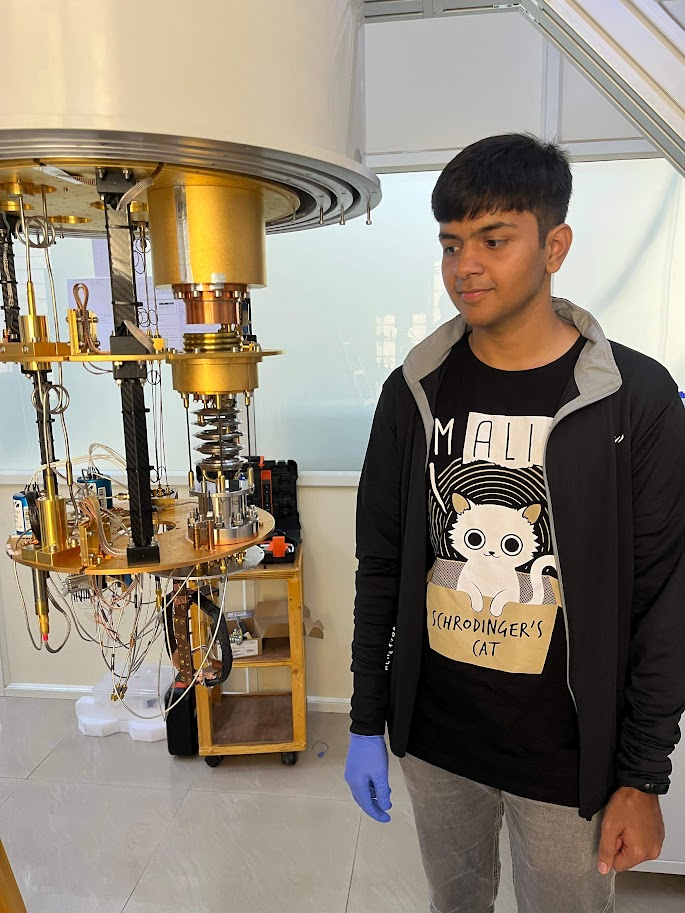
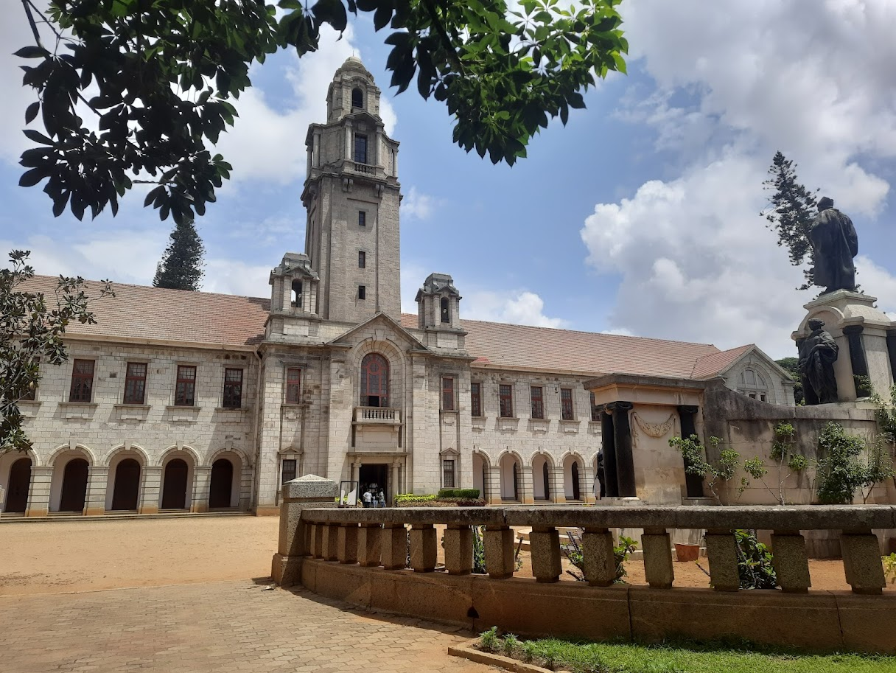
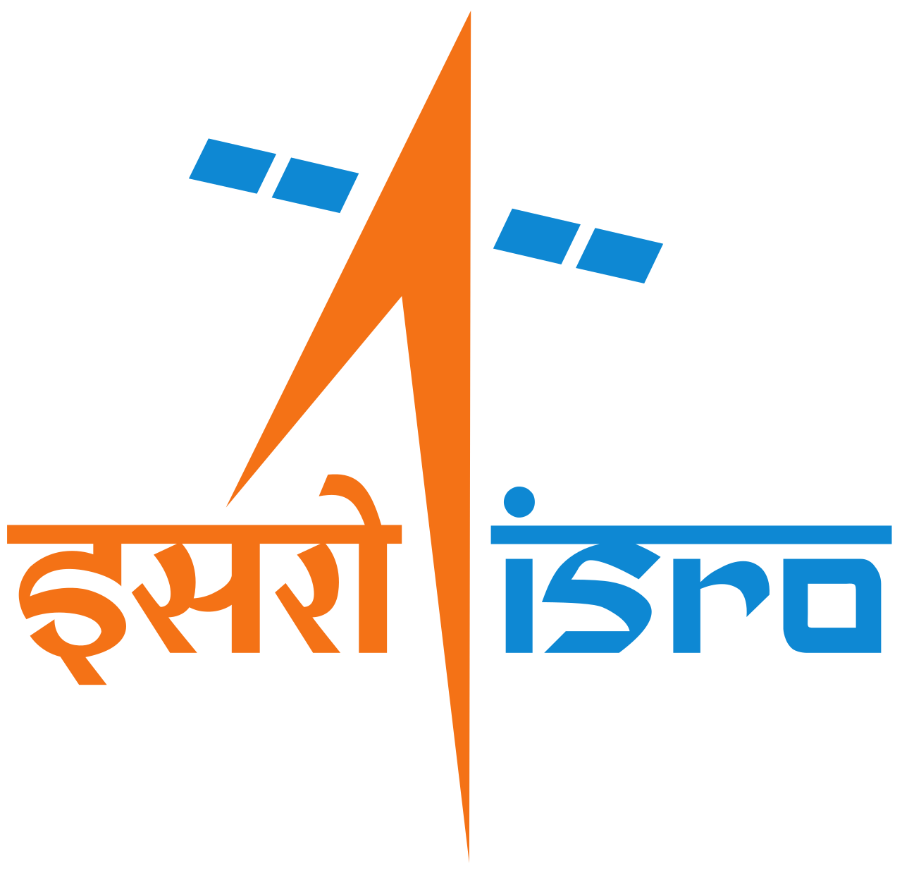
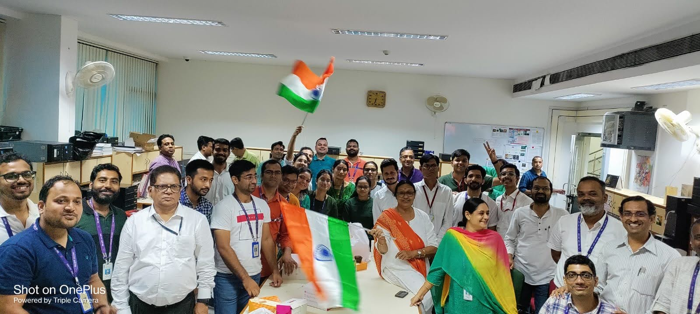

Career
Experience
July 2024 – Present
Research Engineer
Pramatra Space · Bengaluru, India- Digital Design: Leading development of electronic systems for a QKD payload onboard a CubeSat, including simulation and implementation of post-processing algorithms for Key Reconciliation Protocols on Xilinx FPGAs and SoCs.
- Circuit Design: Completed end-to-end circuit design for a Xilinx SoC-based space payload carrying out quantum communication experiments in low Earth orbit.
- System Design: Designed the mixed-signal electronic control architecture for Photonics components used in entangled photon generation and detection.
Dec 2023 – July 2024

Project Associate
Indian Institute of Science (IISc) · Bengaluru, India- Worked on Signal Processing schemes on RFSoC-based hardware for quantum circuit applications at the Quantum Technologies Lab under Dr. Baladitya Suri.
- Readout System Design: Designed a hardware-accelerated readout scheme for measuring purity of a microwave single-photon source and characterising a Josephson Parametric Converter via g² correlation measurement.


2022 – Dec 2023

Graduate Apprentice
Indian Space Research Organisation (SAC, ISRO) · Ahmedabad, India- Research in Digital Design and Signal Processing for Aerospace and Applied Physics, contributing to end-to-end development of Space Radar technologies.
- FPGA TDC for Quantum Radar: Dual-channel Time-to-Digital Converter with 20 ps precision — 15× better than legacy — on a Kintex-7 FPGA (NI PXI card).
- Stepper Motor Control: Novel high-configurability control topology with multi-parameter control inside a Virtex-5 FPGA.

